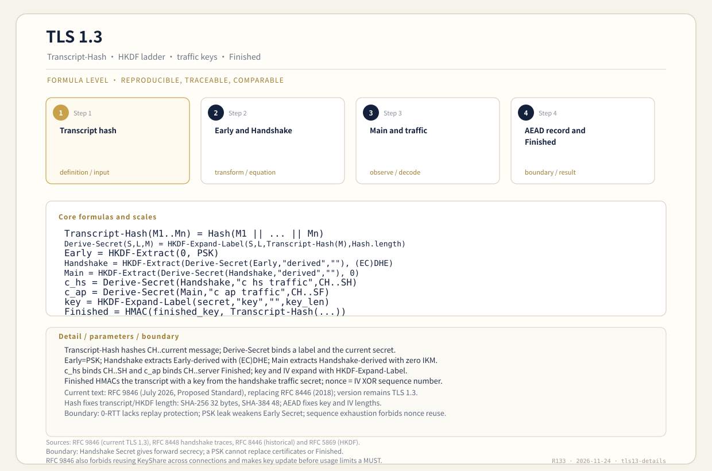
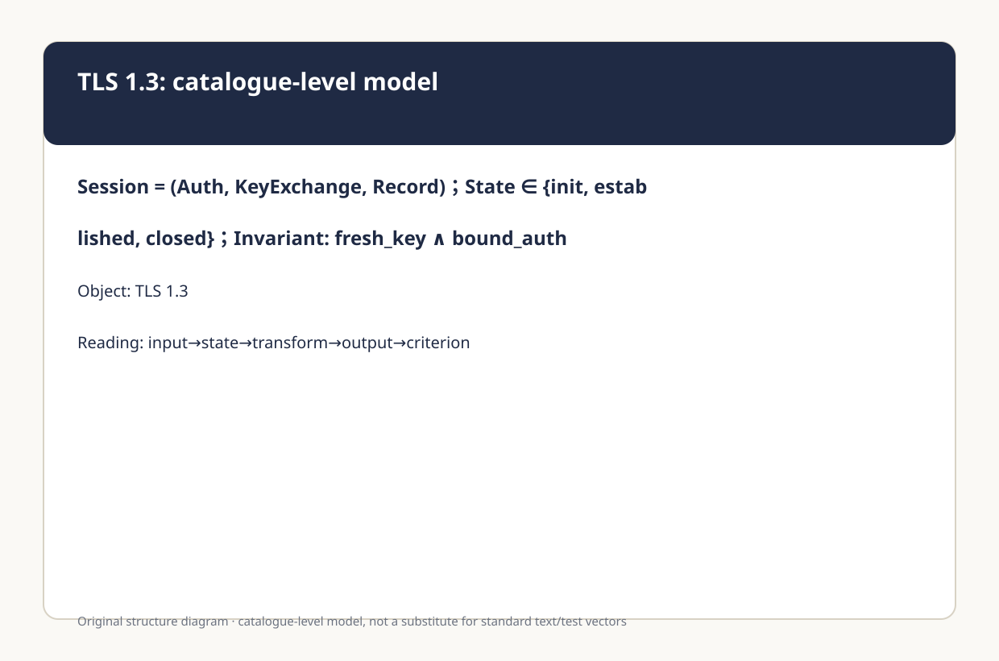

Principles
Protocol: TLS 1.3 (TLS 1.3). TLS 1.3 first accumulates handshake messages into a transcript, then derives each stage key with an HKDF ladder. Transcript-Hash hashes ClientHello through the current message; Derive-Secret binds a label, the transcript hash and the current secret to produce the next secret. Early Secret is extracted from the PSK, or an all-zero PSK; Handshake Secret extracts the Early derived secret with the (EC)DHE shared secret; Main Secret extracts the Handshake derived secret with an all-zero IKM. Then c hs traffic, s hs traffic, c ap traffic and s ap traffic bind the handshake or application message sequence, and finally expand into AEAD keys and IVs.

Why it matters
Splitting keys by stage gives encrypted latter handshake, forward secrecy and separated 0-RTT: Handshake Secret uses ephemeral DH for forward secrecy, application traffic keys come from Main Secret, and the PSK only affects Early Secret; it cannot replace certificates or Finished.
Each traffic secret binds the transcript, preventing handshake splicing; Finished then HMACs the transcript with finished_key and confirms that both sides saw the same handshake.
Applications
Implement in the RFC 9846 key-schedule order: fix the Hash first, for example SHA-256 with 32-byte output, then compute Early/Handshake/Main; derive each traffic secret with a label; expand key and IV with HKDF-Expand-Label, using a 16-byte key and 12-byte IV for AES-128-GCM.
The record layer zero-pads the 64-bit sequence number to IV length and XORs it with the IV to obtain the per-record nonce; AEAD additional_data is the record header and plaintext is the content. Finished uses the handshake traffic secret as base key and expands finished_key to Hash.length bytes.
A shared name may belong to an algorithm, standard, event, person or term; this entry is responsible only for its catalogue binding and does not absorb adjacent records. If versions, regions or institutions define the name differently, the differences stay side by side.

Limits & attacks
0-RTT early data has no cross-connection replay guarantee, and the application must bound its replay window; PSK compromise weakens Early Secret and cannot be treated as a long-term identity. Sequence exhaustion requires key update and forbids wrapping nonce reuse; IV reuse in AEAD directly breaks confidentiality and integrity.
TLS 1.3 does not protect plaintext after an endpoint compromise, and does not replace certificate validation, hostname checks or authorisation; RFC 9846 is a minor update to RFC 8446, so implementations should cite the current text.
History
TLS 1.3 was standardised by RFC 8446 in August 2018, removing static RSA and static DH key exchange, requiring forward secrecy for all public-key exchange, and encrypting the latter handshake.
RFC 9846 was published in July 2026 and replaces RFC 8446, while the protocol version remains TLS 1.3; it forbids reusing KeyShare across connections, makes key update before usage limits a MUST, and renames master to main.
Worked example & verification
Formal model and reproduction steps
[\mathrm{Adv}^{\Pi}_A(\lambda)\le n\cdot\mathrm{Adv}^{\mathrm{prf}}F(\lambda)+\varepsilon{\mathrm{aead}}(\lambda)]
TLS 1.3: the registered public parameters, key material or randomness, and message are mapped through the stated transformation to an output checked against the registered criterion. The worked example is a structural reproduction, not a new test vector; parameter ranges, standard versions and implementation details remain source-bound.
References
- Wikipedia search entry for TLS 1.3. https://zh.wikipedia.org/w/index.php?search=TLS%201.3
- Handbook of Applied Cryptography (Menezes, van Oorschot, Vanstone). https://www.cacr.math.uwaterloo.ca/hac/
- RFC 8446: The Transport Layer Security (TLS) Protocol Version 1.3. https://www.rfc-editor.org/rfc/rfc8446
- Published standard/RFC for TLS 1.3. https://www.rfc-editor.org/rfc/rfc8446